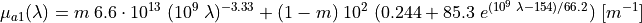
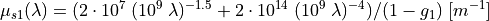
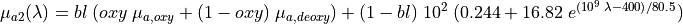
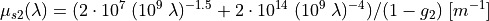

Reflectance spectrum simulations of human skin¶
This example (available in examples/mcml/reflectance_spectrum_skin) shows how to simulate a reflectance spectrum of a simple two-layered human skin comprising epidermis and dermis. The reflectance is acquired with an integrating sphere. Note that the number of skin layers and their optical properties can be changed as desired. Moreover, the reflectance detection scheme can be changed from an integrating sphere to other types of detectors such as optical fiber probes.
Importing the required modules and submodules¶
We import the submodule xopto.mcml.mc which enables an interface to a selection of sources, detectors, the Monte Carlo simulator, etc. The submodule xopto.cl.clinfo comprises helper functions for dealing with OpenCL computational devices. The submodules xopto.materials.absorption.oxyhem and xopto.materials.absorption.deoxyhem are imported for calculations of blood absorption coefficients which we will require for definition of absorption in human skin. Finally, we import the standard modules numpy and matplotlib.pyplot for mathematical functions and plotting.
from xopto.mcml import mc
from xopto.cl import clinfo
from xopto.materials.absorption import oxyhem, deoxyhem
import numpy as np
import matplotlib.pyplot as pp
Computational device¶
Select the desired OpenCL computational device. (see also OpenCL devices).
cl_device = clinfo.gpu(platform='nvidia')
Note
In this example we have selected the first computational device listed under the Nvidia platform. The string should be changed according to the installed hardware devices.
Definition of simulation parameters and skin optical properties¶
Below we define parameters related to the simulation properties and optical and structural properties of skin layers. The parameter nphotons denotes the number of photon packets launched for each simulation, while the parameter wavelengths provides an array of wavelength points at which reflectance is simulated.
nphotons = 1e6
wavelengths = np.arange(450e-9, 801e-9, 2e-9)
The properties of the epidermis (first) and dermis (second) layer are thickness d1 and d2, refractive index n1 and n2, melanin volume fraction m, anisotropy factor g1 and g2, blood volume fraction bl, blood oxygenation oxy, Henyey-Greenstein scattering phase functions pf1 and pf2, absorption coefficients mua1 and mua2, and, finally, scattering coefficients mus1 and mus2.
The absorption coefficients for epidermis and dermis can be calculated according to a simple model given by Steven Jacques that can be accessed through Skin Optics Summary. The epidermis absorption coefficient mua1 of epidermis depends on the melanin volume fraction m and is in the code given by a lambda function enabling a call at each wavelegth. The absorption is given by:

Note
Units of length must be in meters!
The epidermis scattering coefficient mus1 is given by the below formula and is again used in the script as a lambda function to enable calls by different wavelengths.

The dermis absoprtion coefficient mua2 is given by a combination of oxygenated and deoxygenated blood and depends on the blood volume fraction bl and level of blood oxygenation oxy. The blood absorption spectra are stored in mua_oxy and mua_deoxy variables, which are instances of the classes OxyHem and DeOxyHem that offer calculation and interpolation of blood absorption coefficient for arbitrary wavelengths within a valid range. The returned absorption coefficients are in units 1/m.

The dermis scattering coefficient mus2 is assumed the same as in epidermis.

Refer to the code below for specific values of the parameters.
# layer 1 - EPIDERMIS
d1 = 100e-6 # layer thickness in m
n1 = 1.4 # refractive index
m = 0.02 # melanin volume fraction
g1 = 0.8 # anisotropy factor constant with wavelength
pf1 = mc.mcpf.Hg(g1) # Henyey-Greenstein scatterin phase function
# epidermis absortpion coefficient
mua1 = lambda wavelength: m * 6.6*1e13*(1e9*wavelength)**-3.33 + \
(1-m) * 1e2*0.5*(0.244 + 85.3*np.exp(-(1e9*wavelength - 154)/66.2))
# epidermis scattering coefficient
mus1 = lambda wavelength: (2*1e7*(1e9*wavelength)**-1.5 + \
2*1e14*(1e9*wavelength)**-4) / (1-g1)
# layer 2 - DERMIS
d2 = 10e-3 # layer thickness in m
n2 = 1.4 # refractive index
bl = 0.02 # blood volume fraction
oxy = 0.90 # oxygenation
g2 = 0.8 # anisotropy factor
pf2 = mc.mcpf.Hg(g2) # Henyey-Greenstein scatterin phase function
# dermis absorption coefficient
mua_oxy = oxyhem.OxyHem()
mua_deoxy = deoxyhem.DeOxyHem()
mua2 = lambda wavelength: bl * (oxy * mua_oxy(wavelength, None) + \
(1-oxy) * mua_deoxy(wavelength, None)) + \
(1-bl) * 1e2 * (0.244 + 16.82*np.exp(-(1e9*wavelength - 400) / 80.5))
# dermis scattering coefficient
mus2 = lambda wavelength: (2*1e7*(1e9*wavelength)**-1.5 + \
2*1e14*(1e9*wavelength)**-4) / (1-g2)
The layer stack¶
Each layer is an instance of Layer with optical properties as specified above. Note that the absorption and scattering coefficients have to be updated at each iteration through the wavelengths given by the wavelengths parameter. All of the layers are passed as a list to the Layers constructor. The topmost and bottommost layers correspond to the surrounding media above and below the two-layered skin. Therefore, in total 4 layers are provided in an ascending order along the positive z axis, which points into the medium.
layers = mc.mclayer.Layers([
mc.mclayer.Layer(d=0.0, n=1.0, mua=0.0, mus=0.0, pf=pf1),
mc.mclayer.Layer(d=d1, n=n1, mua=1.0e2, mus=1.0e2, pf=pf1),
mc.mclayer.Layer(d=d2, n=n2, mua=1.0e2, mus=1.0e2, pf=pf2),
mc.mclayer.Layer(d=0.0, n=1.0, mua=0.0, mus=0.0, pf=pf1),
])
Source¶
Source is an instance of Line and is defined as a pencil beam situated at the origin and perpendicularly oriented to the layered turbid medium.
source = mc.mcsource.Line(
position=(0.0, 0.0, 0.0),
direction=(0.0, 0.0, 1.0)
)
Detector¶
The reflectance in this example is acquired with an integrating sphere that accumulates all of the photon packets within a certain radius. We assume an integrating sphere with a 1 cm diameter opening, which is in the code provided by the parameter sp_r. For the purpose of detecting only photons within a certain radius, we construct a radial accumulator spanning from 0 to 2*sp_r with 2 radial bins. Each radial bin is therefore the width of sp_r. We selected two bins because the last bin collects all the photon packets that exited the turbid medium, even the ones beyond the last bin. The radial accumulator constructor Radial accepts an instance of RadialAxis, which stores the radial axis positions and related information of the accumulator bins. The radial accumulator Radial is then passed to the simulator detector Detectors as a top detector via the top keyword argument.
sp_r = 0.5e-2 # integrating sphere opening in m
detector_top = mc.mcdetector.Radial(
mc.mcdetector.RadialAxis(
start=0.0,
stop=2*sp_r,
n=2)
)
detectors = mc.mcdetector.Detectors(
top=detector_top
)
The Monte Carlo simulator object and simulation runs¶
We initiliaze the Monte Carlo simulator object Mc with the specified layers, source and detector objects. We also provide the desired computational device via the keyword parameter cl_devices.To conserve with the simulations time, the photon packets that travel 10 cm away from the source are terminated by setting the maximum radius attribute rmax.
mc_obj = mc.Mc(
layers=layers,
source=source,
detectors=detectors,
cl_devices=cl_device
)
mc_obj.rmax = 10e-2
Simulation runs with the above Monte Carlo simulator object have to be done at each wavelength since the absorption and reduced scattering coefficient are wavelength dependent. To store reflectance at each wavelength point, we thus define an empty numpy array reflectacne_spectrum. Subsequently, we iterate over all the wavelengths in the for loop changing the absorption and scattering coefficients for the epidermis and dermis layers. Finally, the simulation is run with nphotons and only the last output parameter of the method call run() which corresponds to the detectors object Detectors with separate detectors stored at the top and bottom. The reflectance as stored by the previously defined Radial detector object can be accessed as the top detector reflectance by using the detector.top.reflectance. Only the first accumulator corresponds to the reflectance acquired through the integrating sphere opening. Since the Radial accumulator stores reflectance per area, we have to multiply the reflectance also by the area of the accumulator to obtain pure reflectance relative to the amount of launched photon packets. At each step i this is then saved to the variable reflectacne_spectrum.
Reflectance spectrum visualization¶
The reflectance spectrum can be easily visualized using wavelengths and reflectance_spectrum arrays.

The complete example¶
# -*- coding: utf-8 -*-
################################ Begin license #################################
# Copyright (C) Laboratory of Imaging technologies,
# Faculty of Electrical Engineering,
# University of Ljubljana.
#
# This file is part of PyXOpto.
#
# PyXOpto is free software: you can redistribute it and/or modify
# it under the terms of the GNU General Public License as published by
# the Free Software Foundation, either version 3 of the License, or
# (at your option) any later version.
#
# PyXOpto is distributed in the hope that it will be useful,
# but WITHOUT ANY WARRANTY; without even the implied warranty of
# MERCHANTABILITY or FITNESS FOR A PARTICULAR PURPOSE. See the
# GNU General Public License for more details.
#
# You should have received a copy of the GNU General Public License
# along with PyXOpto. If not, see <https://www.gnu.org/licenses/>.
################################# End license ##################################
# This is a sample script for Monte Carlo calculations and
# visualization for reflectance as acquired with a 1 cm
# diameter opening integrating sphere from a
# sample of human skin
from xopto.mcml import mc
from xopto.cl import clinfo
from xopto.materials.absorption import oxyhem, deoxyhem
import numpy as np
import matplotlib.pyplot as pp
# DEFINE A COMPUTATIONAL DEVICE
# select the first device from the provided platform
cl_device = clinfo.gpu(platform='nvidia')
# DEFINE RELEVANT SIMULATION PARAMETERS
nphotons = 1e6
wavelengths = np.arange(450e-9, 801e-9, 2e-9)
# DEFINE OPTICAL PROPERTIES FOR TWO-LAYERED HUMAN SKIN
# layer 1 - EPIDERMIS
d1 = 100e-6 # layer thickness in m
n1 = 1.4 # refractive index
m = 0.02 # melanin volume fraction
g1 = 0.8 # anisotropy factor constant with wavelength
pf1 = mc.mcpf.Hg(g1) # Henyey-Greenstein scatterin phase function
# epidermis absortpion coefficient
mua1 = lambda wavelength: m * 6.6*1e13*(1e9*wavelength)**-3.33 + \
(1-m) * 1e2*0.5*(0.244 + 85.3*np.exp(-(1e9*wavelength - 154)/66.2))
# epidermis scattering coefficient
mus1 = lambda wavelength: (2*1e7*(1e9*wavelength)**-1.5 + \
2*1e14*(1e9*wavelength)**-4) / (1-g1)
# layer 2 - DERMIS
d2 = 10e-3 # layer thickness in m
n2 = 1.4 # refractive index
bl = 0.02 # blood volume fraction
oxy = 0.90 # oxygenation
g2 = 0.8 # anisotropy factor
pf2 = mc.mcpf.Hg(g2) # Henyey-Greenstein scatterin phase function
# dermis absorption coefficient
mua_oxy = oxyhem.OxyHem()
mua_deoxy = deoxyhem.DeOxyHem()
mua2 = lambda wavelength: bl * (oxy * mua_oxy(wavelength, None) + \
(1-oxy) * mua_deoxy(wavelength, None)) + \
(1-bl) * 1e2 * (0.244 + 16.82*np.exp(-(1e9*wavelength - 400) / 80.5))
# dermis scattering coefficient
mus2 = lambda wavelength: (2*1e7*(1e9*wavelength)**-1.5 + \
2*1e14*(1e9*wavelength)**-4) / (1-g2)
# DEFINE TWO-LAYERED SKIN MODEL LAYER STACK
layers = mc.mclayer.Layers([
mc.mclayer.Layer(d=0.0, n=1.0, mua=0.0, mus=0.0, pf=pf1), # layer above the medium
mc.mclayer.Layer(d=d1, n=n1, mua=1.0e2, mus=1.0e2, pf=pf1),
mc.mclayer.Layer(d=d2, n=n2, mua=1.0e2, mus=1.0e2, pf=pf2),
mc.mclayer.Layer(d=0.0, n=1.0, mua=0.0, mus=0.0, pf=pf1), # layer below the medium
])
# DEFINE SOURCE
source = mc.mcsource.Line(
position=(0.0, 0.0, 0.0),
direction=(0.0, 0.0, 1.0)
)
# DEFINE A DETECTOR FOR INTEGRATING SPHERE
sp_r = 0.5e-2 # integrating sphere opening in m
detector_top = mc.mcdetector.Radial(
mc.mcdetector.RadialAxis(
start=0.0,
stop=2*sp_r,
n=2)
)
detectors = mc.mcdetector.Detectors(
top=detector_top
)
# DEFINE THE MC OBJECT FOR SIMULATIONS
mc_obj = mc.Mc(
layers=layers,
source=source,
detectors=detectors,
cl_devices=cl_device
)
mc_obj.rmax = 10e-2
# DO SIMULATIONS FOR DESIRED WAVELENGTH RANGE
reflectance_spectrum = np.zeros_like(wavelengths)
for i, w in enumerate(wavelengths):
# for each wavelength redefine optical properties
mc_obj.layers[1].mua = mua1(w)
mc_obj.layers[1].mus = mus1(w)
mc_obj.layers[2].mua = mua2(w)
mc_obj.layers[2].mus = mus2(w)
detector = mc_obj.run(nphotons, verbose=True, wgsize=256)[-1]
reflectance_spectrum[i] = detector.top.reflectance[0] * np.pi * sp_r**2
# PLOT THE REFLECTANCE SPECTRUM
pp.figure()
pp.title('Reflectance spectrum of human skin')
pp.plot(1e9*wavelengths, 100*reflectance_spectrum)
pp.xlabel('Wavelength (nm)')
pp.ylabel('Reflectance (%)')
pp.show()
You can run this example from the root directory of the PyXOpto package as:
python examples/mcml/reflectance_spectrum_skin.py